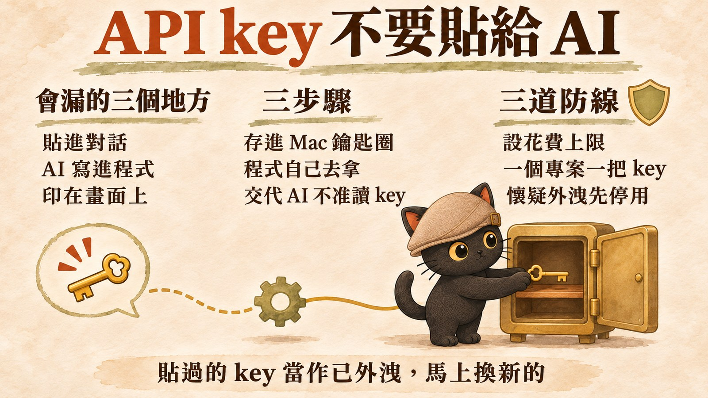
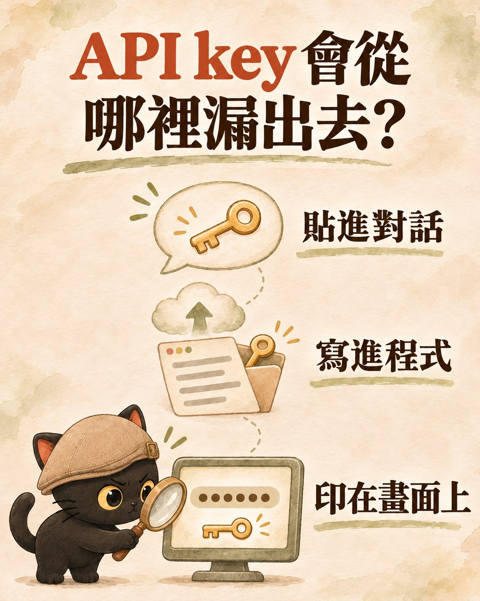
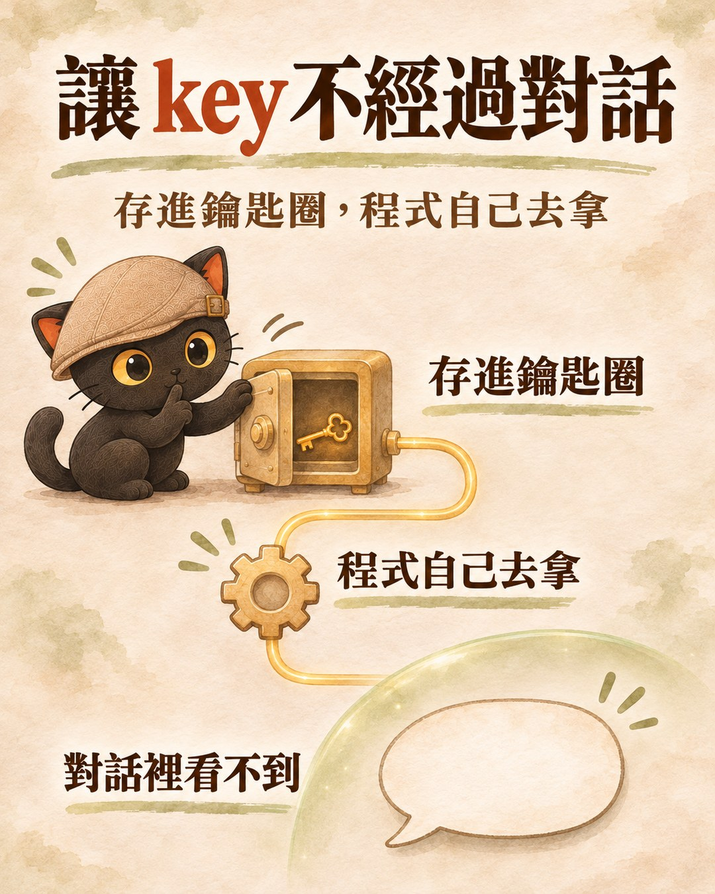

這篇在講什麼
用 AI 寫程式、接 AI 客服、串自動化，遲早會碰到 API key。最直覺的做法是把 key 貼進對話，讓 AI 自己填進去。這篇講為什麼不要這樣做，以及在 Mac 上怎麼讓 key 不經過對話：key 存進鑰匙圈，程式要用時自己去拿，再加上花費上限，萬一外洩也能把損失壓低。
- 用 AI 寫程式或接 AI 服務，被要求「請提供 API key」的人
- 已經把 key 貼給過 AI，想知道要怎麼補救的人
- 幫客戶規劃 AI 工具、要交代金鑰怎麼保管的顧問與接案者
- 兩行終端機指令：把 key 存進鑰匙圈、再讓程式讀出來
- 一段可以直接貼給 AI 的提示詞，讓它照這套規矩寫程式
- 三道防線：花費上限、一個專案一把 key、懷疑外洩先停用

一、「AI 不會洩露密碼」，這句話我要修正
我之前跟客戶說過一句話：
回頭查證之後，這句話只對一半。
後半句有數據撐著。Verizon 每年的資料外洩調查報告（DBIR），2024 年版寫 68% 的外洩事件有人為因素，2025 年版改了計算方式，數字是 60%。這個數字算的是「事件裡有沒有人的參與」，被釣魚、密碼重複用、貼錯地方都算，不是專算密碼外洩，但足以說明人為因素在外洩事件裡佔了大宗。
前半句講太滿了。AI 也會讓密碼外洩，而且有些管道是你貼出去的那一刻就決定了。
二、AI 怎麼讓 API key 外洩：三個常見管道
| 管道 | 發生什麼事 | 為什麼麻煩 |
|---|---|---|
| 貼進對話 | key 留在你的對話紀錄裡，也會送到服務商那邊處理，存多久要看各家政策 | 你沒辦法確定它被刪乾淨，刪掉對話也一樣 |
| AI 寫進程式 | 你把 key 給了 AI 又沒交代清楚，它可能直接把 key 寫進檔案，接著被推上 GitHub | 一旦進了 git 紀錄，事後刪檔案，歷史版本裡還在 |
| 印在畫面上 | AI 測試時把 key 印出來確認，畫面上的文字又被記進對話 | 你沒貼，它自己讀到了 |

第二個管道有一份參考數字。資安公司 GitGuardian 的 2025 年報告，抽查約兩萬個有開 GitHub Copilot 的程式庫，6.4% 至少洩漏過一組密鑰，全體公開程式庫的平均是 4.6%。這是「有開 Copilot 的程式庫」的統計，只能說兩者一起出現，不能證明是 AI 造成的。但至少可以說：用 AI 寫程式，不會自動比較安全。
所以我現在的講法改成：
三、讓 API key 不經過對話：三個步驟
原則只有一句：key 放在 AI 看不到的地方，程式要用時自己去拿。
Mac 有兩個現成的東西剛好做這件事：
- 安全視窗：輸入時畫面只顯示圓點或什麼都不顯示，你打的東西不會出現在對話裡。
- 鑰匙圈（Keychain）：Mac 內建的密碼保險箱，key 加密存在裡面，程式要用再來拿；第一次有新程式要拿時，Mac 可能會跳出視窗問你允不允許。

第一步：把 key 存進鑰匙圈
打開「終端機」（按 Command＋空白鍵，搜尋「終端機」），貼這行：
按 Enter 之後它會請你輸入密碼，這時把 key 貼上。畫面不會顯示任何字，這是正常的。如果它請你再貼一次確認，就再貼一次，按 Enter 就存好了。如果出現「已經存在」的錯誤，代表這個名字之前存過，要更新就在指令最後的 -w 前面加 -U。
OPENAI_API_KEY 是這把 key 的名字，換成你自己好記的就行，例如 CLAUDE_API_KEY。
為什麼 -w 後面要空著：Apple 的說明文件寫，-w 放在最後不給值，系統會跳出提示讓你輸入，這也是它推薦的用法。如果把 key 直接打在指令裡（-w "sk-..."），那串 key 會被記進終端機的歷史紀錄。網路上不少教學是後面那種寫法，照抄要小心。
第二步：程式要用時，從鑰匙圈讀出來
這行會把 key 印在終端機上，所以是給程式在背後用的。不要在 AI 讀得到的地方跑它，包括 AI 的對話，也包括 AI 工具自己開的終端機。
第三步：把規矩交代給 AI
前兩步的指令你不用自己寫進程式。下次讓 AI 寫要用到 key 的程式，先貼這段：
中間兩句是重點。少了「不要印在畫面上」，AI 測試時可能把 key 印出來確認，又回到上面的第三個管道；少了「你自己不要執行」，能在你電腦上跑指令的 AI 工具，還是有辦法去鑰匙圈把 key 讀出來。
- 可以讓 AI 大量處理個資，又不讓它讀到內容嗎？：這一段只講金鑰，那篇把同一套做法用在個資上，AI 只看欄位名稱，資料交給程式搬
四、就算 API key 外洩，也要把損失壓低
存進鑰匙圈是第一道。後面再加兩道，萬一哪天還是漏了，傷害也能壓低。
| 防線 | 怎麼做 | 要注意的地方 |
|---|---|---|
| 花費上限 | OpenAI 後台可以幫組織或專案設每月上限；Anthropic 可以幫工作區（Workspace）設每月上限 | OpenAI 要選「到上限就停止」，不然只會通知不會擋；Anthropic 的預設工作區不能單獨設 |
| 一個專案一把 key | 官網客服一把、自動化一把、測試一把 | 哪把出事就只停那把，其他照常跑 |
| 懷疑外洩先停用 | 第一個動作是到後台把那把 key 刪掉或停用，再產一把新的存回鑰匙圈 | 先停 key 再改程式，順序不要反過來 |
如果你已經把 key 貼給過 AI：把那把 key 當作已經外洩，照上表第三列，到後台停用、產一把新的，這次存進鑰匙圈。
平台也有幫你擋一部分。GitHub 預設會擋下它認得出來的密鑰被推上公開程式庫；Anthropic 跟 GitHub 合作，Claude 的 key 如果出現在公開程式庫，會被自動停用。但 GitHub 無法辨識所有格式的密鑰，這些是最後一道網，不能當第一道。
- 網域要去哪裡買？小編要給帳號密碼嗎？：這一段只講金鑰外洩怎麼止血，那篇講的是更上一層的原則，金流和帳號權限握在自己手上，儲值與保管金鑰留給本人
五、只用網頁版聊天，根本不需要 API key
如果你只是在 ChatGPT、Claude 的網頁或 App 裡聊天，用的是訂閱帳號，不需要任何 API key。
會碰到 key 的，是你開始讓 AI 幫你寫程式、接客服、串自動化的時候。所以 AI 跟你要 key 的那一刻，就是該停下來想一想的時候：它要的其實是「程式能用到 key」，這件事用鑰匙圈就做得到。
- 我想在官網放 AI 客服，API 是什麼、會不會很貴？：這一段只講 key 要不要給，那篇從申請、儲值到 key 只顯示一次，把整個流程走過一遍
六、網路上常見的 API key 保管建議，哪些可以照做
| 常見建議 | 我的判斷 |
|---|---|
| 不要把 key 貼進 AI 對話 | 照做。OpenAI 與 Anthropic 的官方說明都要你把 key 當密碼保管 |
存鑰匙圈時把 key 寫在指令裡（-w "sk-..."） | 不要照抄。改成 -w 後面空著，讓系統跳提示 |
在 ~/.zshrc 加一行，每次開終端機自動把 key 讀進環境變數 | 方便但有代價。在終端機裡跑的 AI 工具也讀得到，我建議程式要用時才讀 |
.env 檔一定要加進 .gitignore | 照做。推上 GitHub 之後再刪，歷史紀錄還在 |
| 設花費上限、一個專案一把 key、外洩先停用 | 照做。 |
給你的 AI 讀的技術備忘（人可以跳過）
- 存入：
security add-generic-password -a "$USER" -s <名稱> -w（-w置尾不給值會提示輸入，Apple man page 標為 recommended） - 更新既有項目：加
-U - 讀取：
security find-generic-password -a "$USER" -s <名稱> -w（只輸出值，供程式擷取，勿在對話中執行） - 程式內讀取：以子程序呼叫上行指令取得字串，不寫入檔案、不 log
- 若必須用
.env：先寫.gitignore（.env、.env.*），範本檔用.env.example只放欄位名 - 外洩處置：先在供應商後台 revoke，再重新產生、存回鑰匙圈，最後檢查帳單與用量紀錄
來源
- 換電腦，設定又要重來一次嗎？：交給 AI 做設定時，哪些授權步驟一定要你本人來
追蹤我，分享一人公司 ＋ AI 員工的應用技巧